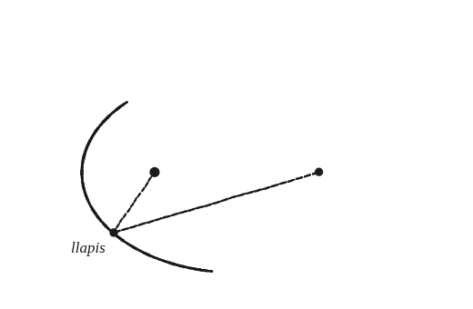
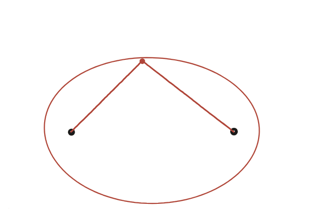

Se t'acut com fer un model aproximat d'una el·lipse fent servir un llapis, dues xinxetes i un tros de fil?

El mètode és, ell mateix, la demostració
Aquí no cal demostrar cap fórmula a part: cal explicar per què aquest mètode físic —dos punxons, un fil, un llapis— dibuixa sempre el mateix tipus de corba, identificant exactament què és el que el fil manté constant mentre es mou el llapis.
Allò que el fil no pot canviar
El fil té una longitud fixa L, tallada una sola vegada abans de començar. Sigui quina sigui la posició del llapis, aquest sempre estira el fil sencer, repartit en dos trossos: un tros del punxó A al llapis, l'altre del llapis al punxó B.

La suma, sempre la mateixa
El fil no s'estira ni s'escurça: per molt que es mogui el llapis, la suma dels dos trossos —la distància del llapis a un punxó més la distància a l'altre— és sempre exactament L, tota la longitud del fil. Aquesta suma no depèn d'on estigui el llapis; només depèn de la longitud del fil, que és fixa.
Reconèixer la definició
"El conjunt de punts la suma de les distàncies dels quals a dos punts fixos és constant" és, exactament, la definició d'una el·lipse —els dos punxons en són els focus. El mètode del fil no s'inventa res de nou: simplement fabrica físicament aquesta condició amb un objecte que, per la seva pròpia naturalesa (un fil no s'estira), no pot fer altra cosa.
El mètode del fil dibuixa sempre una el·lipse perquè la longitud del fil, fixa, es reparteix en dos trossos que sempre sumen el mateix total —exactament la definició d'el·lipse per suma de distàncies als dos focus (els punxons). Aquest mateix fet, combinat amb la reflexió de les Qüestions 96 i 97, explica per què una bola llançada des d'un focus d'una taula de billar el·líptica passa sempre per l'altre focus.
Comprovació
Punxons a (−3,0) i (3,0), fil de longitud 10. Al punt (0,4): distàncies 5 i 5, sumen 10. Al punt (5,0) (un extrem de l'el·lipse): distàncies 8 i 2, sumen també 10.